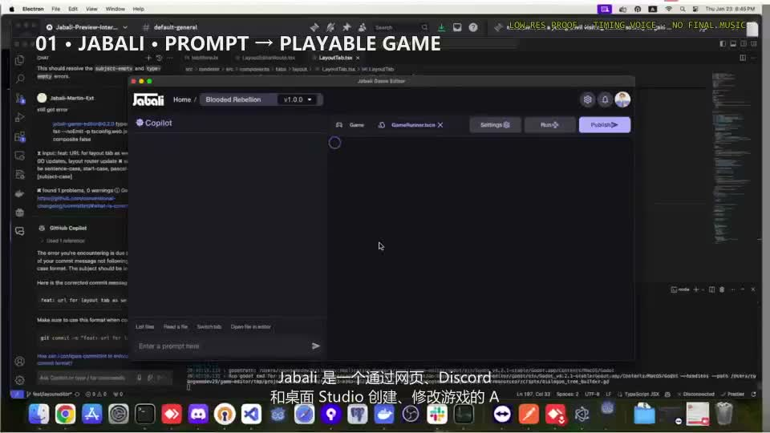

Jabali 已上线 · 访问官网 ↗
AI 游戏创建与编辑平台 · Web 全栈 / Electron通过 Web、Discord 和桌面 Studio 入口，用户输入自然语言 Prompt 即可生成可玩游戏，并持续由 Agent 理解已有工程进行增量修改与调试。
负责工作：参与 Web 前后端与 Electron 桌面 Studio 开发，连接 Game Creation Gateway、Project Composer、编辑器与 Godot 模板 / 组件。
实现内容：解决 Agent 修改后游戏工程仍然可运行、可调试的工程一致性问题；打通代码、模板、资产与编辑器状态的联动。
Agent 网关
Godot 模板
Electron 桌面应用Web 全栈开发
增量上下文修改
Discord Activity